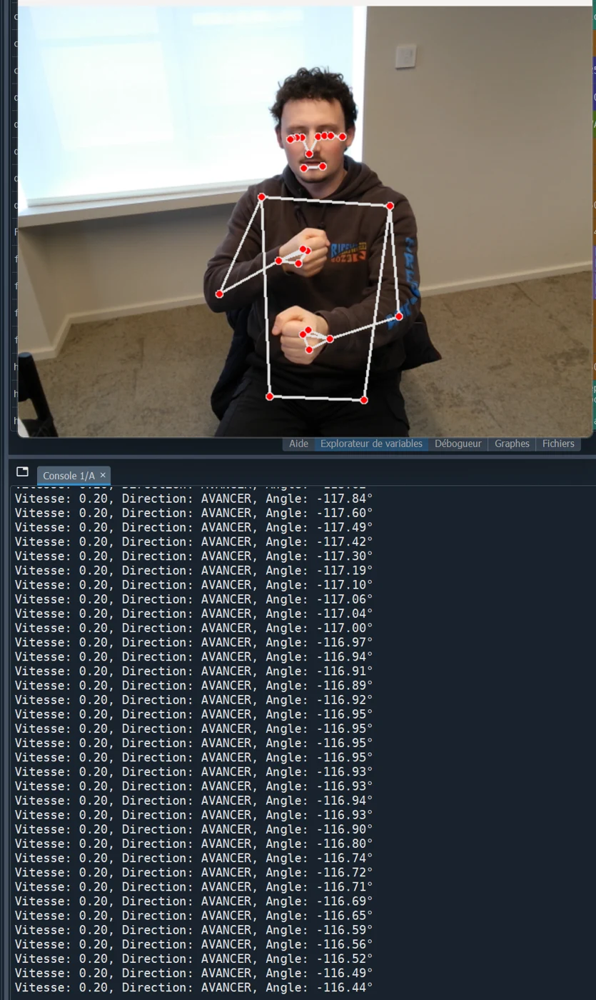
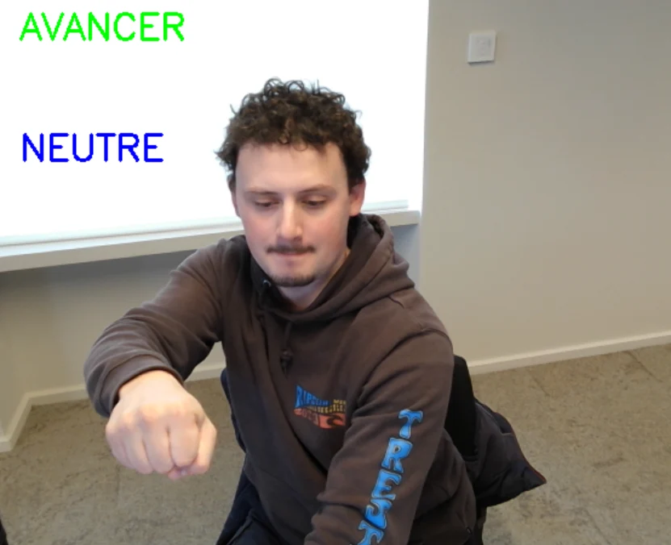
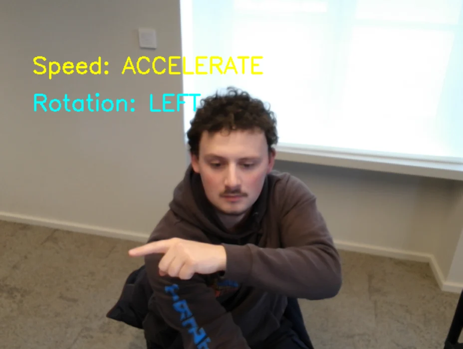

Interaction gestuelle · Python & Unity
Naviguer avec les bras
Explorer trois façons de se déplacer dans un environnement virtuel avec les gestes des bras et des mains.
- Cadre
- Projet Junior · 2024–2025
- Outils
- MediaPipe · OpenCV · Unity
- Approche
- Trois modes de navigation
Le projet en bref.
- Le besoin
- Explorer plusieurs manières de diriger un déplacement virtuel avec les bras et les mains, à partir de gestes observés par une caméra.
- Mon rôle
- Développer les règles de reconnaissance des gestes et leur liaison avec Unity, puis comparer trois modes de navigation dans un parcours d’essai.
- Le résultat
- Trois modes testés : 2-Hands Flying, Grabbing the Air et Hand Control. Les observations exploratoires font ressortir des différences de prise en main et de reconnaissance.

01 / Faire du geste une commande
Faire du geste une commande
Ce projet Junior de Master explore des modes de navigation fondés sur les mouvements des bras et des mains. L’idée est de transformer des gestes observés par une caméra en commandes de déplacement dans un environnement virtuel. Une telle interaction pose plusieurs questions : quel geste associer à l’avancée, comment distinguer la direction de la vitesse, et comment reconnaître suffisamment bien ces gestes pour que la navigation reste compréhensible ?
Trois modes ont été développés et comparés pour examiner ces différentes relations entre le corps et la commande. Le projet ne se limite donc pas à une seule démonstration : il propose plusieurs façons de naviguer, puis les confronte à un parcours de test. Cette comparaison permet de faire ressortir les points forts et les difficultés de chaque approche, aussi bien du point de vue de la reconnaissance que de la prise en main.
02 / Trois modes à comparer
Trois modes à comparer
Les trois modes reposent sur des gestes différents. 2-Hands Flying utilise la position relative des poignets pour piloter le déplacement. Grabbing the Air s’appuie sur une main fermée qui revient vers le corps, comme une traction, et sur la main ouverte pour orienter le mouvement. Hand Control Flying Speed utilise la position de l’index par rapport au haut du corps pour gérer la vitesse et la direction.
Pour chaque mode, les gestes doivent être traduits en règles : distances, angles, seuils et états de la main. Ces règles déterminent le passage d’une posture observée à une commande. L’enjeu est de différencier une intention de navigation d’un simple mouvement intermédiaire. Les captures permettent d’observer les postures retenues et les réponses attendues, avant de comparer leur comportement dans la scène de test.
- 2-Hands Flying : l’écartement et l’orientation des poignets contrôlent le déplacement.
- Grabbing the Air : une main fermée qui se rapproche du corps simule une traction ; la main ouverte sert à orienter le déplacement.
- Hand Control Flying Speed : la position de l’index par rapport au haut du corps sert à gérer la vitesse et la direction.

03 / Reconnaissance et intégration
Reconnaissance et intégration
Le prototype associe Python, MediaPipe pour la détection des articulations, OpenCV pour le traitement des images et NumPy pour les calculs de distances et d’angles. Les commandes calculées sont transmises à Unity par UDP, puis appliquées au déplacement dans l’environnement. Mon rapport documente la conception des règles de reconnaissance, les trois modes de navigation et leur intégration dans le parcours d’essai.
L’expérimentation décrite comprend une présentation des gestes, un parcours guidé, une exploration libre et un questionnaire. Ce déroulement permet de regarder à la fois le fonctionnement du système et la manière dont les interactions sont comprises. Les retours portent notamment sur la réactivité, la naturalité du mouvement, le réalisme et le confort. Le nombre de participants n’étant pas précisé dans le rapport, ces résultats sont présentés ici comme des observations exploratoires.

04 / Comparer pour améliorer
Comparer pour améliorer
Les essais rapportés mettent en avant 2-Hands Flying, suivi de Hand Control. Grabbing the Air rencontre davantage de difficultés de reconnaissance et de prise en main. La comparaison montre que la possibilité technique de détecter un geste ne suffit pas à rendre l’interaction confortable : la relation entre ce geste et le déplacement doit également être claire pour la personne qui l’utilise.
Les principales pistes d’amélioration concernent le calibrage, la gestion de la vitesse et la robustesse de la détection. Un réglage adapté à la morphologie et à la position de l’utilisateur pourrait rendre les commandes plus régulières. Des repères visuels ou sonores aideraient aussi à comprendre les états reconnus par le système. Le projet fournit ainsi plusieurs bases de navigation et un premier retour sur leurs limites respectives.